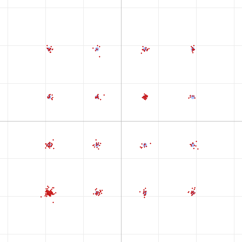
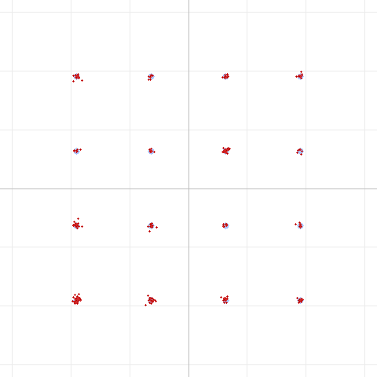

The story so far
- Part 1 characterized the DART modem over two UV-Pro radios and traced the quality ceiling to the audio path.
- Part 2 showed that SBC's bitpool setting adds ~3% EVM at the radio's default (18), but that raising it saturates fast and is swamped by channel noise.
This time we go one level deeper: given a fixed bitpool budget, how does SBC decide where those bits go — and can we steer that decision to favor our data waveform?
A 60-second tour of how SBC works
SBC (the mandatory Bluetooth A2DP codec) is a subband codec. For each little block of audio it does three things:
- Split into subbands. An analysis filterbank divides the spectrum into 4 or 8 equal-width frequency subbands. At our 32 kHz / 8-subband config, each subband is 2000 Hz wide (SB0 = 0–2000 Hz, SB1 = 2000–4000 Hz, …).
- Measure each subband's level. For every subband it computes a scale factor — essentially how loud that band is in this block. The scale factor sets the range of the quantizer.
- Hand out bits. SBC has a fixed pool of bits per frame — the bitpool — and it distributes them across the subbands. A subband that gets more bits is quantized finely (low noise); one that gets few bits is quantized coarsely (audible/measurable quantization noise).
Step 3 is the interesting one. How SBC decides which subbands deserve more bits is governed by its bit-allocation method, and the SBC standard defines two: Loudness and SNR.
Loudness vs. SNR allocation
Both methods start from the per-subband scale factors, but they weight them differently:
SNR allocation distributes bits to equalize the signal-to-quantization- noise ratio across all subbands. Every occupied band gets enough bits to hit a similar noise floor. It's flat and even-handed — it treats all frequencies as equally important.
Loudness allocation applies a psychoacoustic weighting on top of that. It knows the human ear is more sensitive to some frequencies (roughly the mid-band of speech and music) and less sensitive to others, so it steals bits from bands the ear cares less about and spends them where they'll be most audible. For music and voice, this is exactly right — it makes the codec sound better to a human at the same bitrate. Loudness is the sensible default for a Bluetooth speaker or headset.
Here's the catch: a data modem is not a human ear.
Why loudness is the wrong choice for data
DART's OFDM waveform packs its subcarriers into ~500–2500 Hz. Every one of those subcarriers carries equally important bits — there is no "perceptually less important" part of the spectrum. When loudness allocation decides some of that band matters less (because it would matter less to a listener), it under-funds those subcarriers with bits, and their quantization noise spreads the constellation. The psychoacoustic model is optimizing for the wrong thing entirely.
SNR allocation, by contrast, gives every subcarrier a uniform quantization floor — which is precisely what a data waveform wants. Same bitpool, same bandwidth, just spent evenly instead of by a hearing curve.
Seeing the difference (16QAM through SBC @ bitpool 18)
We ran the hardest mode, 16QAM, through the SBC codec at the radio's bitpool 18 with each allocation method — no channel noise, so this is purely the codec's contribution.
Loudness allocation — EVM 3.5%

SNR allocation — EVM 1.8%

Same codec, same bitpool, same signal — the only change is how the bits were distributed. The SNR clusters are visibly tighter around their ideal points, and the EVM is cut roughly in half (3.5% → 1.8%). That improvement is free: it costs no extra Bluetooth bandwidth.
How the benefit holds up with real noise
Because this only helps where SBC quantization is the dominant noise, the advantage is largest on a clean link and shrinks as channel noise takes over:
| Channel noise | Loudness EVM | SNR EVM |
|---|---|---|
| none (pure SBC) | 3.5% | 1.8% |
| 25 dB | 3.9% | 2.7% |
| 15 dB | 7.0% | 6.5% |
| 10 dB | 11.4% | 11.2% |
All still decode. On a clean link SNR allocation nearly halves the codec's contribution; on a noisy link the channel dominates and the choice barely matters.
What we changed
We flipped DART's transmit SBC encoder to SNR allocation for data frames only — voice transmissions keep loudness, where the psychoacoustic weighting genuinely helps a human listener. The allocation method is signaled in each SBC frame header, so a compliant decoder adapts automatically; the SBC standard requires decoders to support both modes.
The honest caveats
- It only helps the app→radio hop. The return path (radio→app) uses the radio firmware's own SBC encoder, whose allocation method we can't change.
- It won't unlock the failed high-order modes over the air. On the real link the constellation is dominated by ~29% EVM of phase noise from the FM audio path — a ~1.7% codec improvement is a rounding error against that. This is a clean, correct-by-design tidy-up of one avoidable noise source, not a fix for the phase-noise ceiling.
- Compatibility should be verified on hardware. It's spec-compliant and very likely fine, but if a specific radio's firmware misbehaves with SNR frames, it's a one-line revert.
Reproduce this
The allocation method is now a switch in the DART test tool:
dart run test/dart_modem_test.dart pipeline -m 5 --bitpool 18 --sbcalloc loudness -o out.wav --png loud.png "message"
dart run test/dart_modem_test.dart pipeline -m 5 --bitpool 18 --sbcalloc snr -o out.wav --png snr.png "message"
Try it with channel noise (--noise 10) to watch the advantage fade as the link
degrades, and with different modes (-m 3 for 8PSK) to see how the codec floor
scales with constellation density.
Method: DART software pipeline (encode → SBC codec round-trip → optional AWGN → decode), 16QAM R5/6, 32 kHz / mono SBC at 16 blocks / 8 subbands, bitpool 18. Constellation diagrams generated by the DART test tool. Third in a series; companions: "Pushing Data Through FM Voice Radios" and "Does SBC Bitpool Matter?"